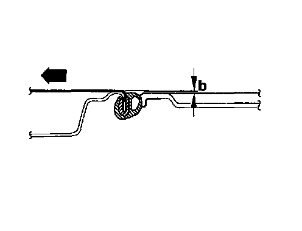

Sunroof Panel Height
Sunroof parallel running OK:
- Tilt glass panel open.
- Push back sunroof headliner.
- Release trim frame and push to rear.
- Close glass panel.
- Loosen all four screws on glass panel (floating alignment of roof cut-out).
- To prevent wind noise carry out front and rear height adjustment as shown in accompanying illustrations.

Panel adjustment at front:
- Dimension a = 1 mm lower than roof.
- Arrow indicates direction of travel.

Panel adjustment at rear:
- Dimension b = 1 mm higher than roof.
- Arrow indicates direction of travel.
- Tighten glass panel mounting screws. Tightening torque: 6 Nm (53 in lb).
- Slide trim frame forward and clip in (clipped-in front frame area and guided at rear).